k-Day 122｜妮可·羅賓
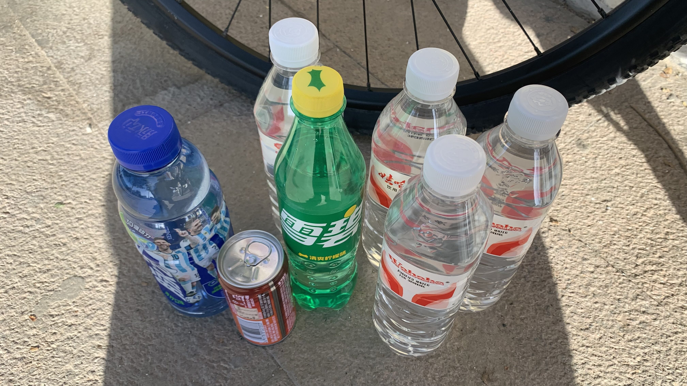
據說一路上店家不多，回到昨天勸我別上山的超市買好水源。
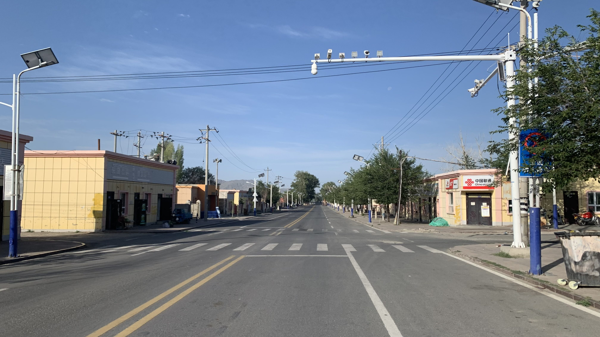
新疆的小鎮環境相當整潔，路上沒什麼人，倒是抬頭就會看見比例不符的攝影機。
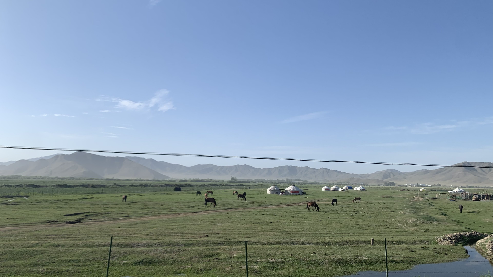
此處蒙古包頂部比較尖，整體造型少了點張力。馬的毛色油亮，大腿肉相當厚實。
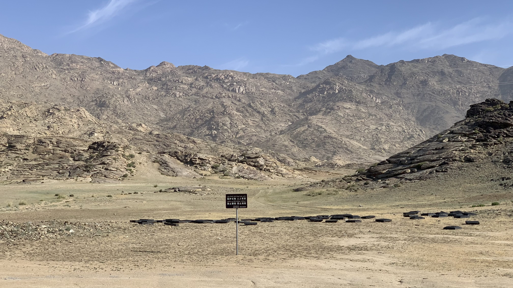
出城後會見到這個保護文物的告示。沒能看到野生石人，不過從查干郭勒往青河方向會沿著查干河走一陣，途中有許多墓葬石堆，到了青河之後就會看到從查乾郭勒搬進博物館的石人。
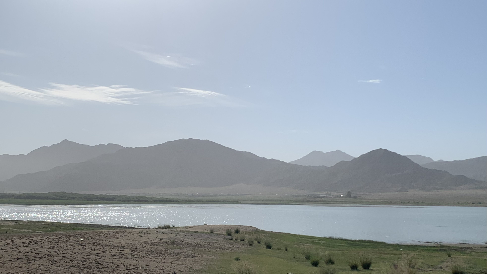
經過河邊，坐下來啃饢喝咖啡
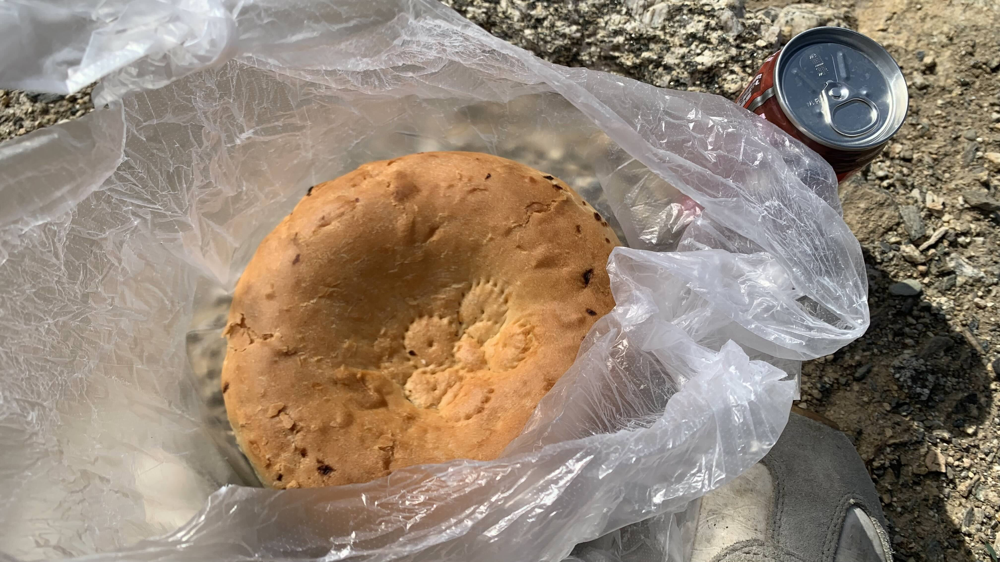
麵餅頗有韌性，表皮聞起來是烤箱的香氣帶著香料味。
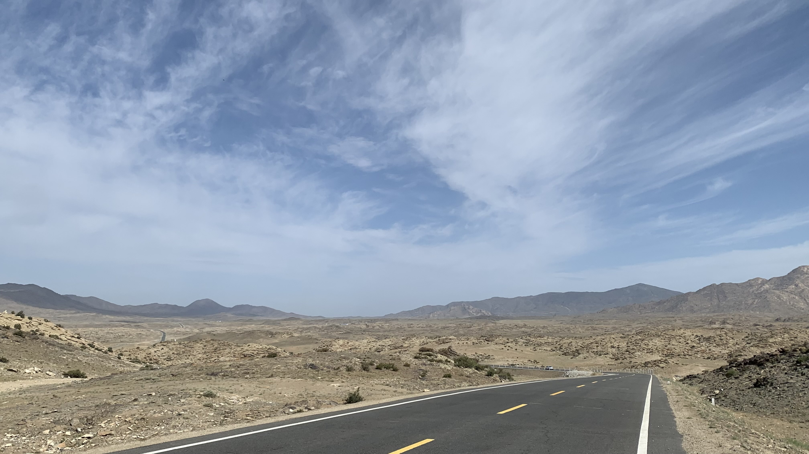
途中景色頗荒涼，騎車有些無聊。為什麼不直接查詢石人被送到哪裡，直接到博物館參觀就好了呢？
大概是因為這樣就不好玩了。
石人的意義有兩種，一種是被放置在河谷高地，與場所呼應的存在。若是被搬離現場進入博物館，或是被立了牌坊以柵欄包圍，關注的重點從場所空間轉移到物件，石人原本指向的其它就消失了。
石人同時也標誌著古人騎馬經過河谷的移動痕跡。新疆的石人大多被搬進博物館，少數則成為景區，在本體被移除或框限後，沿著路線走比真正看到石人更重要。
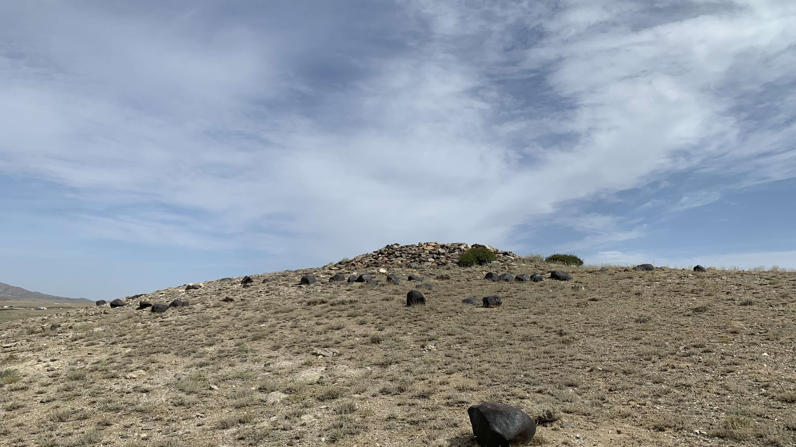
騎了一陣子，果然又出現石堆堆起來的墓。
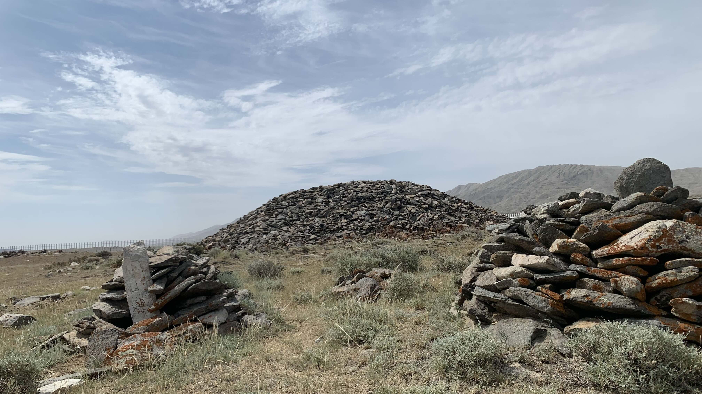
沿著河往西走，沒多久又在河谷高處靠近柏油路的地方發現一座石堆。
也許是路線過於荒涼，也可能是自己的行為產生聯想，今日騎車時不斷回憶起海賊王裡羅賓在阿拉巴斯坦上船後的片段。
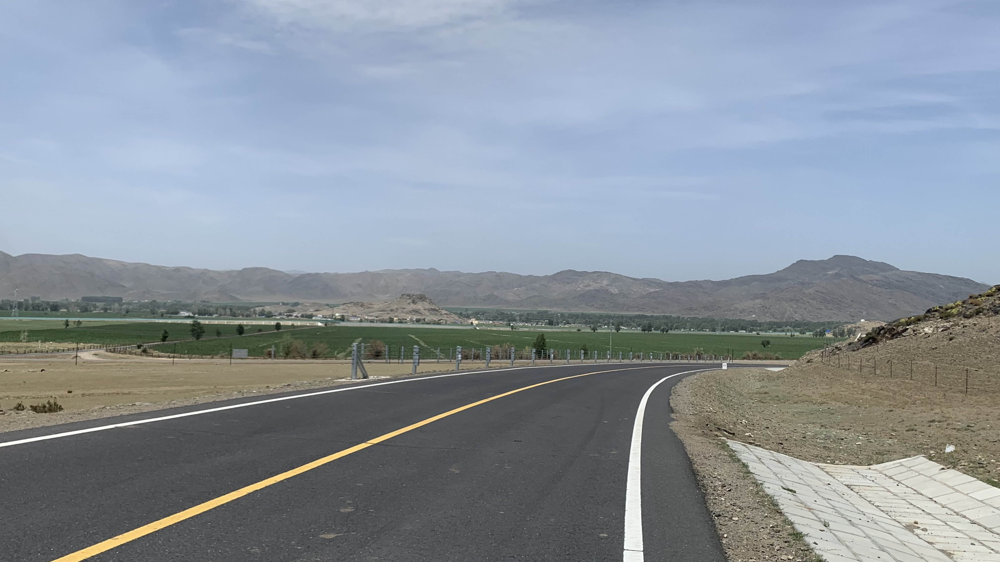
看到綠色出現，表示城鎮不遠了。
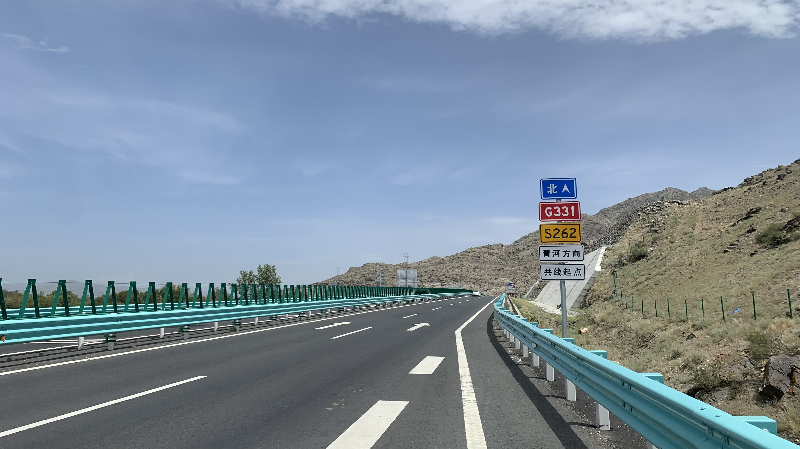
離開查干河流域走上G331國道，可以一路抵達西邊的阿勒泰。阿勒泰也有石人，甚至還設了觀光景區，但本人實在沒啥興趣。
首先，說到石人當然還是蒙古草原上的最爲經典。其次是青河的石人，僅僅只在石頭上刻出面部，身體幾乎抽象，比起阿勒泰的晚期石人更具精神性。
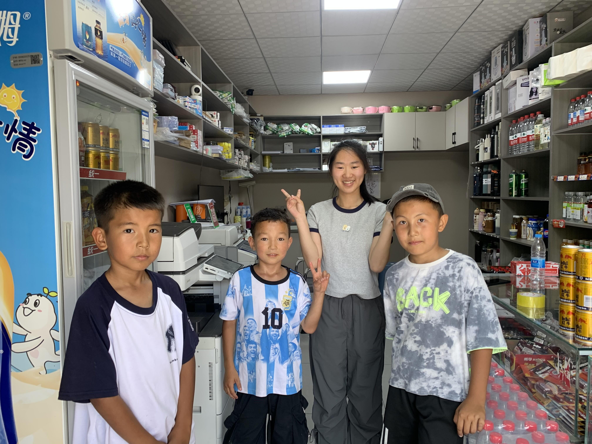
約莫下午抵達青河市區。等紅綠燈時被三個騎自行車的小孩攔住，穿梅西上衣的小孩用帶點上揚的口音問：「你是騎行的？」看來是哈薩克族小朋友。
「是的」
聽到我這麼回答，他和朋友興奮地互相傳遞了一個眼神。問我要去哪？我說想喝飲料，三個小孩往空中一招手就要我跟著他們走。沿路遇到警察、路人、店員，他們都會先開口幫我介紹：
「他從日本騎過來，他是台灣人也是中國人。台灣人也是中國人。」
一行人抵達一間賣飲料的影印店。中間比他們高的女性是高中剛畢業來打工幫忙的，請我喝了一瓶飲料。
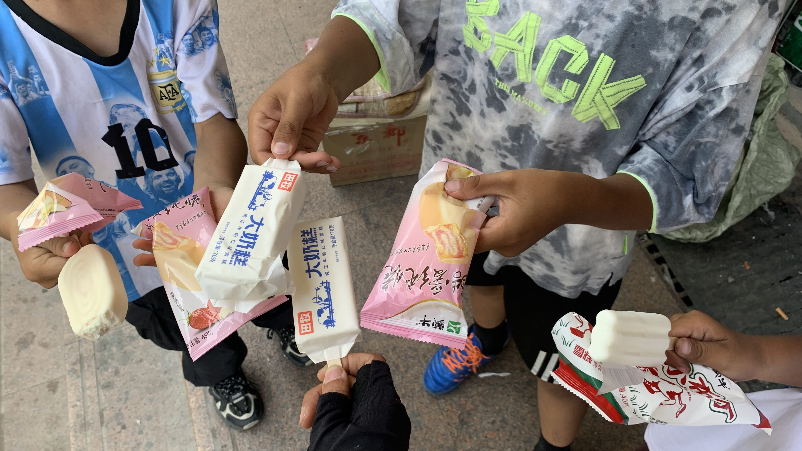
三個孩子和一名高中畢業生的各種問句交疊在一起，實在不知道要先聽哪一句。
高中生拿著自己在各地旅行的照片給我分享，小朋友們則越過手機上的照片抬頭問我：「你會說日語嗎？我媽媽會說韓語」、「我以為你是日本人，我在電視上看到踢足球的日本人」、「你喜歡C羅嗎？我也喜歡！」
「但是你穿著梅西的衣服呢！」我說。
「那都是我媽媽要我穿的！」梅西小朋友抓著頭髮露出哀怨的神情。
頗為突兀地他突然問道：「你喜歡吃雪糕嗎？新疆有個雪糕很好吃，我帶你去買！」
看來是嘴饞了，三個小孩拉著我到旁邊的超市，擠在冰櫃前面，他們推薦我吃最有名的新疆大奶糕，是純牛奶做的。兩個小孩各抓了兩隻冰棒，上一張照片最左邊的洋基小朋友只拿了一個，四個人坐在商店外的階梯上吃冰。
吃著冰，小朋友們說起自己去過的國家，沒想到小小年紀已經去過不少地方了。
「因為我們是富二代啊。」坐在我旁邊的兩位小朋友說。
此時，梅西小朋友吃完第一支，正要拆開第二支冰棒時失手掉在地上。眼看他順手拍下一直坐在最右邊沒說什麼話的洋基小朋友手中唯一一支冰。洋基小朋友的臉看來有點委屈，卻也沒有生氣沒有哭。
低頭一看，階梯前不但躺著兩支冰的屍體，還有一堆黏膩的包裝袋。
「不丟垃圾桶嗎？」實在不知道如何跟小孩溝通這種事。
「不用！我們青河環境很好，每天都會有人打掃。」梅西小朋友和Back小朋友異口同聲地說。
正在爭論之際，有位低頭推著車的男子走過我們面前，離開時回頭朝我們看了一眼。
「他是我們這的乞丐，他只能靠著乞討為生」棒球帽小朋友突然用相當大人的語氣說了這句話。
差不多該去找住處了。我撿起自己的包裝紙，起身往樓梯上找垃圾桶，他們認真跟我說：「真的沒事，我們這裡不是台灣，沒人會罰你錢。」（我剛和他們分享台北亂丟垃圾的罰金）
心情有點複雜啊，三個孩子很可愛，一下問我要不要去第三小學參觀，一下又說要帶我去找晚上住的酒店。
吃完冰後梅西小朋友又問：「你想喝飲料嗎？有個飲料很好喝！」
「你們想喝飲料是嗎？」看到他們興奮地點頭，立刻往店裡跑。
「一人拿一個啊，你們要把我吃垮嗎？」看到他們交頭接耳手上越抓越多，小學老師真是偉大的職業。
吃完冰喝完飲料，三個人很守承諾，帶我到轉角的酒店登記。
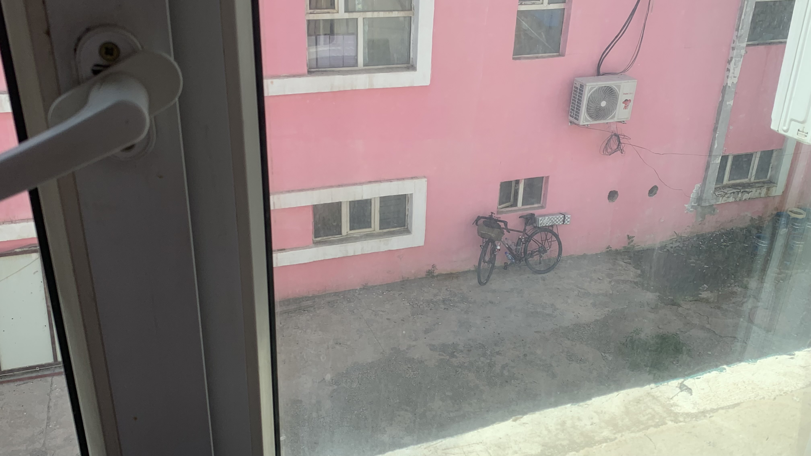
房間一口價一百元，不給殺價。車子停在後院，從房間的窗戶能看到。
對了，剛剛下樓跟酒店老闆聊天，老闆說他以前去查干郭勒時那邊確實就有兩尊石人。我跟他說已經被收到青河博物館了。老闆露出：「原來搬走了啊！」的表情。
像不像妮可・羅賓呢，他也在找歷史本文，但不是一路朝著考古資料走，而是跟著魯夫他們一起冒險，在沿途搜集碎片。
今日花費： 飲水 21、冰 10、飲料 15、晚餐 30、 10、袖套 7、住宿 100元